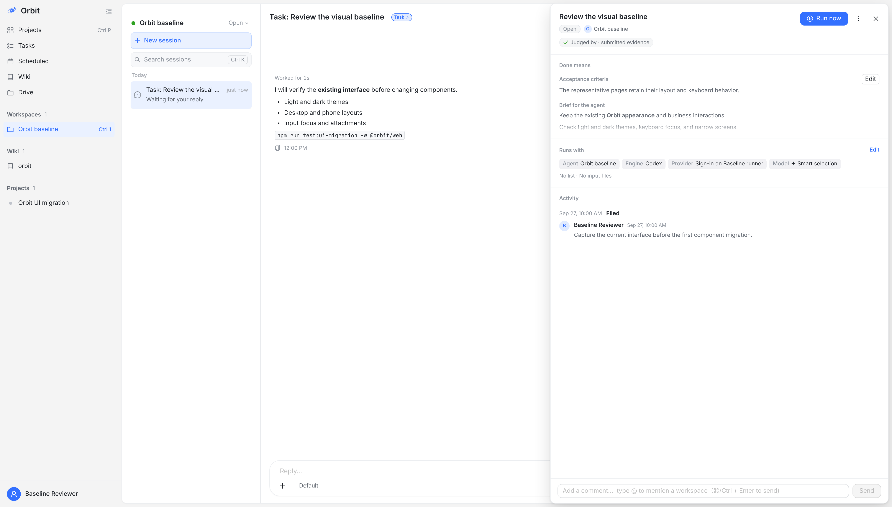
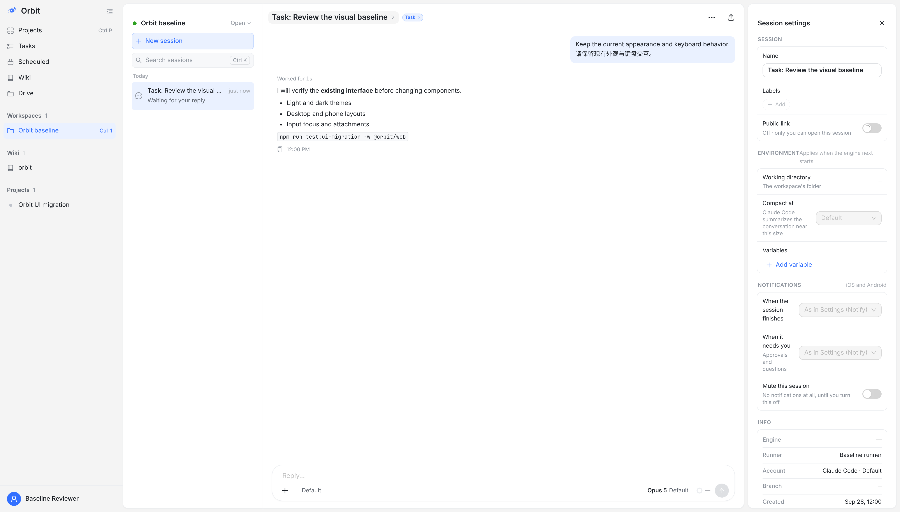
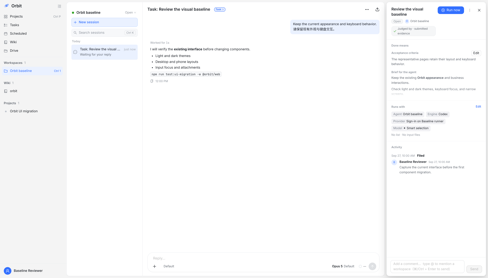
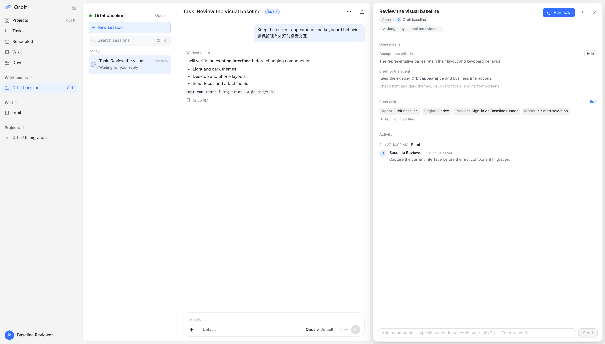
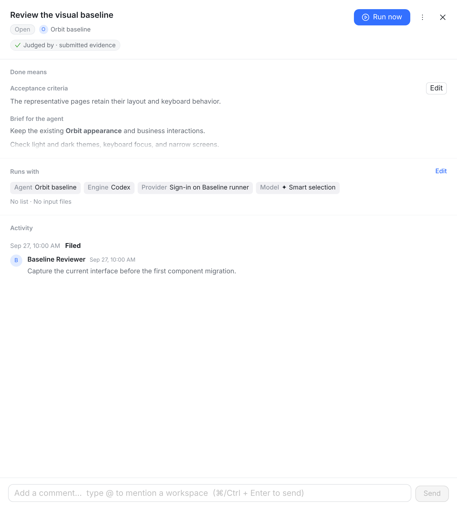

owner 11-26：点完之后，用右边的侧栏展示任务详情会不会更好？下面都是真页面截图（今天 main 的构建，窗口按你的截图 2056×1171），「改后」是同一构建里把今天那块浮层收进页面的一栏（像 Help 那样把页面挤窄）后拍的，不是画的。





| 哪儿 | 只改会话页：?task=<id> 在会话页时，任务是页面右边的一栏（会话挤窄），不再是浮层。项目页、Tasks 页、其它页照旧浮着/并排，不动。 |
| 宽度 | A：420px（推荐）；B：今天的 780px。窗口宽到放不下「会话 ≥ 560px + 任务栏」时，任务退回今天的浮层；≤960px 是整页。 |
| 一次一栏 | 任务栏和会话设置栏同时只开一个：按「Task ›」收起设置，按标题收起任务。 |
| 开和关 | 「Task ›」开/关同一栏，开着时显示为按下；✕、Esc、返回都关。地址照旧 ?task=，返回、复制链接、刷新都和今天一样。 |
| 栏里的任务 | 就是今天的任务详情（同一个组件），只是放进栏里；栏里点依赖任务，替换为那个任务（今天也是）。 |
| 顺带 | 任务的 Activity 里那条「这个会话」：在这栏里不再链接到自己（可选，见待定 ③）。 |
落地：一个 web 任务——TaskOverPagePanel 在会话页用栏的样式、和 settingsOpen 互斥、「Task ›」变开关；测试：会话页打开任务后会话仍可见、再按收起、和设置互斥、窄窗整页。手机不受影响（11-26 定了手机顶栏不加 Task）。
待你定：① 会话页的任务改成右边一栏（推荐）还是保持浮层；② 栏宽 A 420px（推荐）/ B 780px；③ Activity 里「这个会话」那条在栏里不再链接自己（推荐，小）。